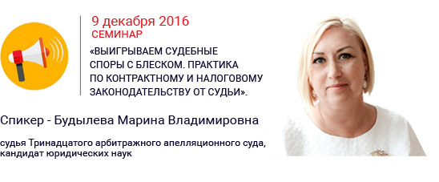
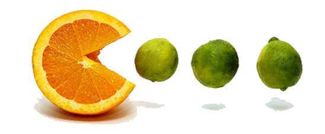

Здравствуйте, Ирина Вячеславовна.
С Вами главный редактор новостного дайджеста "ProPravo" Алина Матвеева.
Лес рубили, про закон — забыли
Теоретически с 1 января 2017 года российский малый бизнес должны были порадовать сразу две хороших новости: и рост предельных значений для применения УСН, и увеличение показателя коэффициента-дефлятора. И если учесть рост значений обоих показателей, то получается, что в 2017 году для перехода на УСН должно использоваться значение 128 250 000 рублей, а для утраты права на применение УСН — 171 000 000 рублей.
Полезные материалы сегодня:
Приглашаем на семинар!
✐ Реформа обязательственного права: 25 новых способов просчитать риски
Выигрываем судебные споры с блеском!
100 млн документов в Плюс!
Система КонсультантПлюс преодолела очередной рубеж: суммарное количество документов в ней превысило 100 миллионов! Федеральное и региональное законодательство, судебная практика, законопроекты, комментарии, консультации, образцы и формы документов и многое другое.
В настоящее время КонсультантПлюс — самая полная база правовой информации среди коммерческих справочных правовых систем в России. Эффективно работать с таким массивом документов позволяют современные инструменты для быстрого поиска и анализа информации.
В частности, в новой Технологии ТОП есть персональные профили для бухгалтеров, юристов, специалистов бюджетных организаций и специалистов по закупкам. Профили позволяют настроить систему КонсультантПлюс под профессиональные потребности конкретного специалиста: своя стартовая страница с важными документами под рукой, своя лента новостей, специальные подсказки и результаты поиска.
Став подписчиком новостного дайджеста "ProPravo", Вы получаете:
✔ консультацию правового характера от ведущих экспертов бесплатно;
✔ еженедельную блиц–прогулку по новостям законодательства;
✔ полезные статьи и советы юристу;
✔ рекомендации и приглашение на важные профессиональные мероприятия в Санкт–Петербурге и области;
... а также личное общение посредством почты e-mail — принципиальное отличие моих писем! Я не забуду о праздниках и обязательно учту Ваши пожелания!
С заботой о Вас, редакция новостного дайджеста "ProPravo".